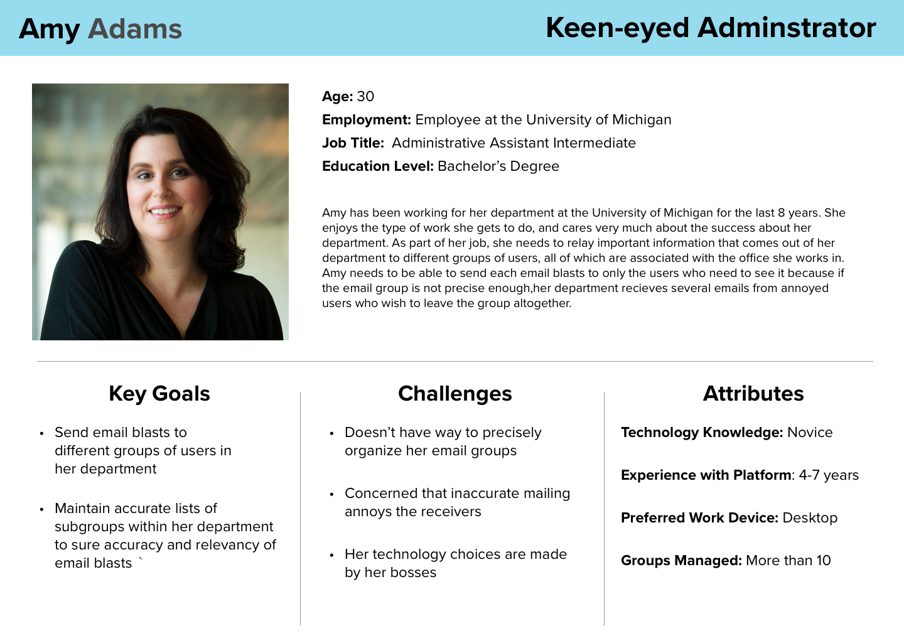

User Interviews
With the help of our client, we conducted five interviews with five MCommunity users with different roles in the university, such as students and administrators to learn more about MCommunity’s user needs. We summarized three key findings after the interviews.
- A good mass emailing function is important because of the platform’s affiliation with the university, emails do not get caught by spam filters and get higher visibility.
- Many users forget to update contact information, and it makes search less useful.
- Users dislike the fact that the platform makes it difficult to leave a group.
Additionally, we created 3 personas to represent different MCommunity user types.

